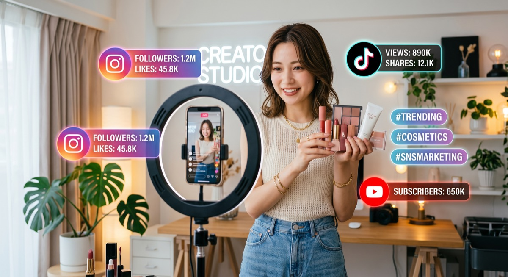

市場規模の拡大に伴い、多くの日本企業が越境ECに参入していますが、すべての企業が成功を収めているわけではありません。言語の壁、文化の違い、複雑な物流など、越境ECならではのハードルを越えられずに撤退してしまうケースも少なくありません。
本記事では、これから越境ECを始める方、あるいはすでに始めているが売上が伸び悩んでいる方に向けて、越境ECで成功するための重要なポイントと、実際に成果を上げている日本企業の成功事例、そして失敗しないための決済・物流手法について徹底的に解説します。

越境ECにおける成功の定義とは？
越境ECにおける成功とは、単に「海外から注文が入ること」ではありません。「持続的に海外のリピーターを獲得し、国内市場の変動に依存しない安定した外貨の収益基盤を構築すること」こそが真の成功と言えます。
そのためには、一過性のブームや広告による一時的な売上に頼るのではなく、現地の消費者に「ブランドのファン」になってもらうための地道なマーケティングと、信頼される顧客体験（スムーズな配送と丁寧なサポート）を提供し続けることが求められます。
越境ECで成功するための5つのポイント
越境ECを成功に導くためには、以下の5つのポイントを確実に押さえる必要があります。
1. 現地市場の徹底的なリサーチ
日本で売れているからといって、海外でもそのまま売れるとは限りません。現地のトレンド、競合他社の存在、価格相場、法規制などを徹底的にリサーチし、「その国で本当に求められている商品か」を見極めることが第一歩です。
2. 徹底したローカライズ（現地化）
言語の翻訳だけでなく、デザインのトーン＆マナーや、商品の見せ方も現地の文化に合わせる必要があります。例えば、アメリカ向けのサイトはシンプルで洗練されたデザインが好まれますが、中国や東南アジア向けのサイトでは、情報量が多く賑やかなデザインの方がコンバージョン率が高くなる傾向があります。
3. 安心感を与えるカスタマーサポート
海外から商品を購入する際、消費者が最も不安に感じるのは「本当に商品が届くのか」「偽物ではないか」「トラブルがあった時の対応は大丈夫か」という点です。透明性の高い配送ポリシーの提示や、現地の言語での迅速なお問い合わせ対応（チャットボットの活用など）が信頼構築に直結します。
4. 現地に最適化された決済方法の導入
決済方法はコンバージョン率に最も大きな影響を与えます。ターゲット国で最も普及している決済方法を必ず導入しましょう。後述しますが、国境を越えたスムーズな決済体験を提供することが離脱を防ぐ鍵です。
5. SNSを活用した認知拡大とファン育成
自社サイトを構築しただけでは、誰も訪問してくれません。Instagram、TikTok、Facebook、そして中国市場なら小紅書（RED）やWeiboなど、現地のターゲット層が日常的に利用しているSNSを活用し、インフルエンサーを巻き込んだPRを行うことが不可欠です。
日本企業の越境EC成功事例
ここでは、実際に越境ECで大きな成功を収めている日本企業の事例をカテゴリ別にご紹介します。
事例1：化粧品・美容ブランドの成功事例
ある日本のオーガニックコスメブランドは、中国市場への進出にあたり、小紅書（RED）を活用したKOL（キーオピニオンリーダー）マーケティングに注力しました。商品の成分の安全性や、日本独特の繊細なパッケージデザインをインフルエンサーにレビューしてもらうことで、感度の高い20代〜30代の女性層から圧倒的な支持を獲得。自社越境ECサイトでの売上を前年比300%以上に伸ばしました。
事例2：伝統工芸品の成功事例
日本の刃物（包丁）を製造する地方の中小企業は、英語圏（主にアメリカとヨーロッパ）に向けた越境ECサイト（Shopify）を構築しました。職人が一つ一つ手作りする工程をYouTubeやInstagramの動画で発信することで、「本物のメイドインジャパン」を求める海外の料理愛好家やプロのシェフの心を掴みました。高単価でありながら、常に数ヶ月待ちの予約状態が続く大成功を収めています。
事例3：アパレル・サブカルチャーの成功事例
日本のストリートファッションブランドは、グローバル対応の決済システムであるStripeを導入し、世界150カ国以上からの注文を受け付ける体制を整えました。さらにFedExと連携し、海外への迅速な配送を実現。Instagramのグローバルアカウントで多言語での発信を続けた結果、国内売上を海外売上が上回るというグローバルブランドへの成長を遂げました。
失敗しないための決済・物流手法の選び方
越境ECのインフラとして最も重要なのが「決済」と「物流」です。
決済システムの選び方
越境ECの決済には、StripeやPayPalといったグローバル対応の決済ゲートウェイを利用するのが一般的です。特にStripeは、135以上の通貨に対応しており、現地の決済手段（Alipay、WeChat Pay、Apple Pay、Google Payなど）を一つのプラットフォームで一括導入できるため、非常に強力なツールとなります。為替手数料や入金サイクルも比較検討して選びましょう。
物流・配送手法の選び方
主な配送手段としては、日本郵便のEMS（国際スピード郵便）や国際eパケット、そしてDHLやFedExなどの国際クーリエ（宅配便）があります。
EMSは広範な国に比較的安価で送れますが、コロナ禍以降は遅延が発生しやすい地域もあります。一方、DHLやFedExは料金は高めですが、自社専用の航空機を持っているため確実かつ非常にスピーディー（北米なら最短2〜3日）に届きます。
客単価が高い商品や「お急ぎ便」を希望する顧客にはDHLを提供し、送料を抑えたい顧客にはEMSを提供するなど、複数の配送オプションを用意して顧客に選ばせるのがベストプラクティスです。

越境ECの売上を伸ばす集客・SNSプロモーション
多言語サイトをオープンした後は、集客が勝負です。海外市場ではGoogle広告やFacebook広告といったWeb広告も有効ですが、最もコストパフォーマンスが高く、ブランドのファンを獲得しやすいのが「SNS×インフルエンサーマーケティング」です。
ターゲット国の言語や文化を理解している現地のインフルエンサー（マイクロインフルエンサーからメガインフルエンサーまで）に商品を提供し、リアルなレビューを発信してもらうことで、ブランドの認知度と信頼度を一気に高めることができます。
PROTECHでは、飲食店の魅力を最大限に引き出すインバウンド動画制作から、抖音・TikTokの運営代行、インフルエンサー（KOL）のキャスティングまでを一貫してサポートしています。集客力アップを目指す飲食店様は、ぜひご相談ください。